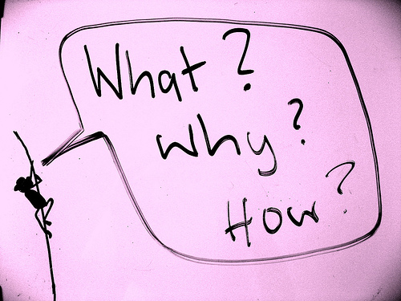

Symfony2
Mateusz Angulski
Powstała: 25 luty 2012
Zaktualizowana: 25 listopada 2013
Mateusz Angulski
Powstała: 25 luty 2012
Zaktualizowana: 25 listopada 2013

Kilka podstawowych powodów
Kontener Dependency Injection
use Politechnika\PrezentacjaBundle\Mailer;
$mailer = new Mailer('sendmail');
$mailer->send('angul@polibuda.pl', '...' );
Powiedzmy, że mamy podobne wywołania rozporoszone po całym projekcie i chcemy teraz zmienić mailera na coś innego.
Najlepiej wytłumaczyć kontenerowi co ma robić jak ktoś potrzebuje mailera
services:
fancy_mailer:
class: Politechnika\PrezentacjaBundle\Mailer
arguments: [sendmail]
Konfiguracja serwisu
Teraz jeśli potrzebujesz skorzystać z obiektu (serwisu) mailera wystarczy
class PrzykladowyKontroler extends Controller
{
public function sendAction()
{
$mailer = $this->get('fancy_mailer');
$mailer->send('angul@polibuda.pl', '...' );
}
}
W dowolnym fragmencie kodu mającego dostęp do kontenera
Zdarzenia
Może ulec zmianie w wersji 2.4
Etapy powstawania bundla
Struktura plików zgodna z dobrymi praktykami
<!DOCTYPE html>
<html>
<head>
<title>Moja super strona</title>
</head>
<body>
<ul id="navigation">
{% for item in navigation %}
<li><a href="{{ item.href }}">{{ item.caption }}</a></li>
{% endfor %}
</ul>
<h1>Moja super strona</h1>
{{ a_variable }}
</body>
</html>
Logiczna ścieżka do pliku bundla
@PolitechnikaPrezentacjaBundle/Controller/DefaultController.phpodpowiada
src/Politechnika/PrezentacjaBundle/Controller/DefaultController.php
Logiczna ścieżka do metody kontrolera
PolitechnikaPrezentacjaBundle:Default:indexodpowiada
Politechnika\PrezentacjaBundle\Controller\DefaultController::indexAction()
Logiczna ścieżka do templatki twigowej
PolitechnikaPrezentacjaBundle:Borrow:index.html.twigodpowiada
src/Politechnika/PrezentacjaBundle/Resources/views/Borrow/index.html.twig
Przykładowe polecenia
php app/console cache:clear
php app/console router:debug -env=prod
php app/console generate:bundle
Postawmy na szybko jakąś stronę
Wiele innych